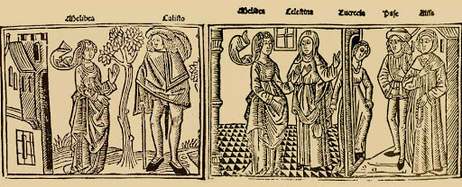
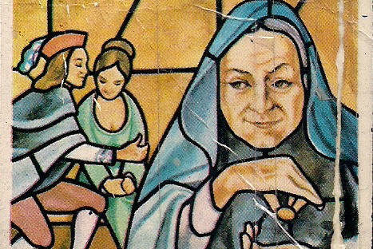
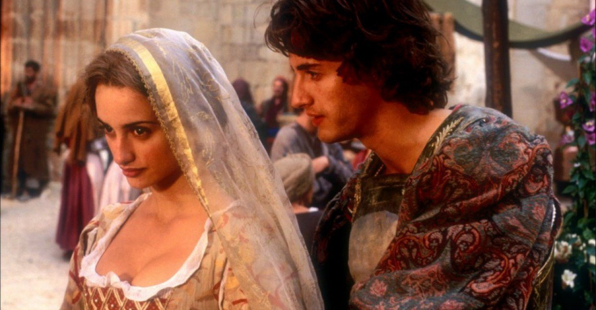

En esta página web se estará presentando información variada sobre la histórica obra literaria "La Celestina". Esta se desarrolla en España cerca del Siglo XIV y es clasificada por muchos estudiosos como una Tragicomedia. Esta obra fue inicialmente publicada en el 1499 y su aparente autor es Fernando de Rojas.

Resumen de la obra
Esta historia comienza con el personaje de Calisto, un hombre joven con dinero y reputación al cual se le escapa su halcón a un jardín cercano. Allí se encuentra con Melibea de quién se enamora perdidamente, el le confiesa su amor a la joven pero ella lo rechaza. Este se regresa a su hogar y confiesa su amor a su sirviente Sempronio cuál le habla de una alcahueta, bruja y antes prostituta llamada Celestina que pudiera ayudarle a conquistar a Melibea.
Calisto le paga 100 monedas a Celestina para que le ayude, luego esta parte hacia su casa y Calisto envía a Sempronio a que la acompañe. Sempronio llega a casa de Celestina y se queda en la casa de esta junto a Elicia, su amante, mientra Celestina parte hacia la casa de Pleberio y Alisa, padres de Melibea. Alisa sale un momento y quedan Melibea y Celestina a solas, esta le habla de Calisto y como él la ama. Celestina se va a su hogar y luego, junto a Sempronio, llegan a Casa de Calisto a darle las buenas nuevas.

Luego de varios actos, Lucrecia, sirvienta de Melibea, llega a casa de Celestina ya que necesitan su ayuda. Luego que ambas llegan a casa de Melibea, esta confiesa su amor hacia Calisto, en parte gracias a la labia de Celestina. Celestina y Melibea acuerdan que a la media noche Calisto llegara a la puerta y podrán hablar allí. Celestina va a decirle a Calisto, da por terminada su labor como alcahueta entre Melibea y Calisto y este le da como recompensa una cadena de oro. Esa noche, Calisto y Melibea se ven y confiesan su mutuo amor, luego de un rato Calisto se va, Sempronio y Pármeno, quiénes estaban acompañandolo se dirigen a casa de Celestina y Calisto continúa hacia su casa.
Pármeno y sempronio discuten con Celestina en su casa y exigen que se dividan las ganancias y el collar, Celestina se niega y luego de una fuerte discución termianan asesinando a Celestina. Para escapar ellos se lanzan por una ventana, a pesar de terminar mal heridos, la justicia los degolla en la plaza mayor. Luego, Sosia, sirviente de Calisto informa a los demás de la muerte de Sempronio y Pármeno, por último le cuenta a Calisto. este muy apenado lamenta su muerte y acuerda con sus otros sirvientes, Tristán y Sosia, ir a Media noche nuevamente a ver a Melibea. Llegada la medianoche Calisto pudo estar con Melibea poco tiempo ya que llego tarde, junto a sus criados se regresa a su hogar.

Mientras tanto, Elicia y Areúsa, empleadas de Celestina y amantes de Sempronio y Pármeno respectivamente, se acababan de enterar de al muerte de sus allegados y desean vengar la muerte de sus amantes y Celestina, quiénes consideraban como su madre. Para lograrlo convencen a Centurio, alguien conocido por sus trabajos en la ciudad, de que ha sufir a Calisto para vengar la muerte de sus amantes, para lograrlo Areúsa saca información de Sosia y estas le dicen a Centurio.
La noche siguiente, cuando Calisto va a ver a Melibea en el jardín, llega Centurio ys sus compañeros a cumplir lo que habia prometido a Elicia y Areúsa. Tristán y Sosia logran deshacerse de ellos pero ante el ruido, Calisto piensa que sus amigos están en peligro y mientras baja la escalera para salir a donde ellos, Calisto resbala y cae de forma mortal. Cuando Melibea se entera la trsiteza la consume y frente a su padre confiesa su amor por Calisto, se lanza de la torre y muere. Al final, Pleberio va a su cuarto, donde está su esposa, y cuenta todo lo que ha ocurrido.